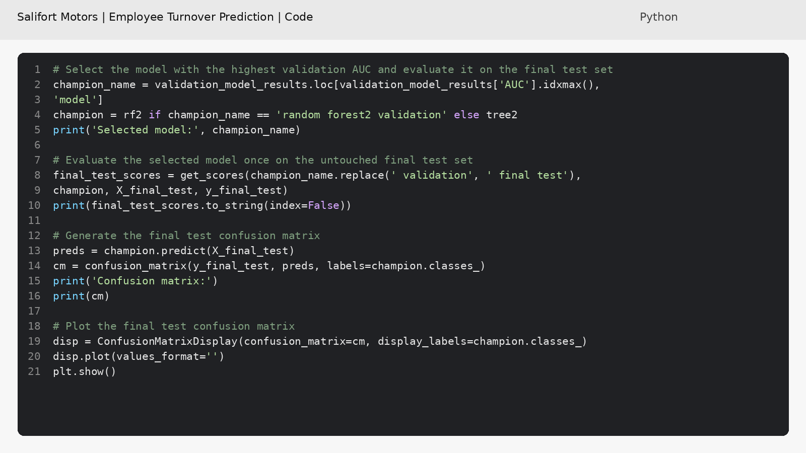

04 · Workforce analytics case study
Salifort Motors
Employee turnover analysis focused on workload, employee experience, predictive risk, and practical retention questions.

14,999employee records
3,008duplicates removed
96.5%test accuracy
96.1%test ROC AUC
01 · The problem
Start with the question the client actually needs answered.
Salifort Motors wants to understand employee turnover and identify patterns that can help HR focus retention efforts. The analysis treats prediction as decision support, not an automated employment decision.
Key findingWorkload, project count, tenure, satisfaction, and evaluation related variables carried strong predictive signal. Seven projects were also associated with all employees leaving in this dataset, which is a strong descriptive pattern that deserves investigation rather than a causal conclusion.
What this meansThe data suggests that turnover risk is not a single-variable problem. A useful review would look at workload balance, project allocation, employee experience, tenure, and career development together.



02 · Evidence and approach
The technical work is here to support the answer, not replace it.
The engineered Random Forest was selected after comparing a Logistic Regression baseline with tree-based models. The final holdout result was 96.5% accuracy, 86.4% recall, 89.2% F1, and 96.1% AUC.
What I checkedData quality, exploratory patterns, evaluation behavior, and the evidence behind the main conclusion.
How I evaluated itModel selection and final reporting were separated from the held-out test results wherever the notebook workflow allowed.
Why it mattersThe result is interpreted in terms of what a client can do next, not only which algorithm scored highest.
03 · Final analysisKey findingWorkload, project count, tenure, satisfaction, and evaluation related variables carried strong predictive signal. Seven projects were also associated with all employees leaving in this dataset, which is a strong descriptive pattern that deserves investigation rather than a causal conclusion. Business impactThe data suggests that turnover risk is not a single-variable problem. A useful review would look at workload balance, project allocation, employee experience, tenure, and career development together. Recommended actionPrioritize human review around employees showing combinations of high workload or project counts and other risk signals. Validate these patterns on fresh workforce data before changing HR policy.
What did the analysis actually answer?
This is the part a busy client can skim in 30 seconds.
Client takeaway
What I would want the client to remember.
The analysis points to workload balance, project load, tenure, satisfaction, and evaluation as areas worth investigating together. The model can help prioritize review, but it should not replace human judgment or be treated as proof of cause.
04 · Limitations and next steps
What the result can support, and what I would do next.
Limitations
Feature importance identifies predictive relationships in this dataset. It does not prove that workload, evaluation, tenure, or any other feature causes someone to leave. The dataset is educational and needs external validation.
What I would do next
- Validate the model on a fresh workforce dataset.
- Review workload and project allocation alongside satisfaction and tenure.
- Define the business cost of missed risk versus unnecessary follow-up before choosing an operating threshold.
Client takeaway
Prioritize human review around employees showing combinations of high workload or project counts and other risk signals. Validate these patterns on fresh workforce data before changing HR policy.